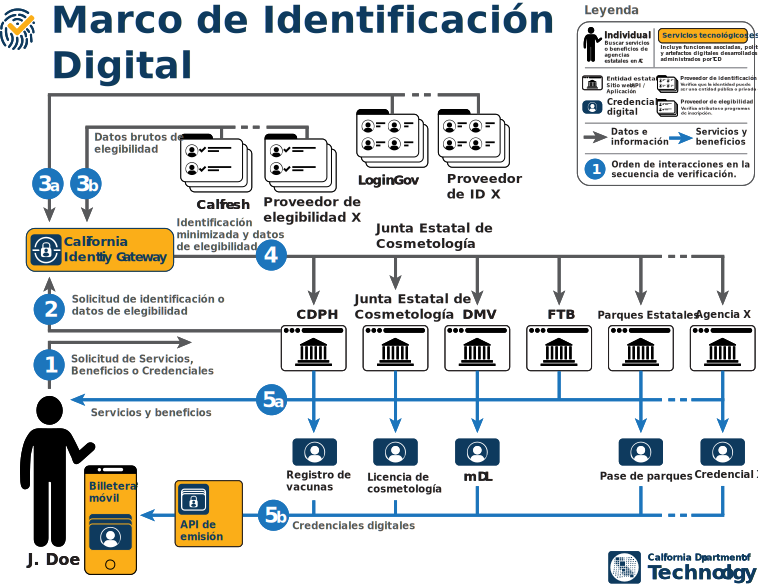

Una identidad digital (ID) es una forma de demostrar quién eres en el mundo en línea. Una identificación digital es como una contraparte digital de sus documentos de identificación físicos, como un pasaporte o una licencia de conducir; Es una prueba electrónica de su identidad que puede "presentar" en línea para demostrar quién es y que es elegible para acceder a información, servicios y beneficios.
El Marco de Identificación Digital, administrado por el Departamento de Tecnología de California, garantiza que todos cumplan con los mismos altos estándares, protegiendo mejor su privacidad y lo ayuda a acceder fácilmente a más programas y beneficios del estado de California al simplificar y agilizar la verificación de elegibilidad en todas las agencias.
Acerca del Marco de Identificación Digital
El Departamento de Tecnología de California (CDT) es responsable del desarrollo, la implementación, la administración y la gestión del Marco de Identificación Digital de California. El Marco es una recopilación de datos, infraestructura tecnológica, servicios digitales y gobernanza que permite un uso seguro y fácil de las identificaciones digitales en toda California. Garantiza que todos cumplan con los mismos estándares elevados, protege mejor su privacidad y lo ayuda a acceder fácilmente a más programas y beneficios estatales de California al simplificar y agilizar la verificación de elegibilidad en todas las agencias.
De acuerdo con la autoridad del CIO estatal y el CTIO estatal, el CDT está desarrollando tanto la tecnología que respalda este marco como la política, la orientación y la gobernanza para empoderar a otros departamentos estatales para que lo utilicen para mejorar sus propias ofertas de servicios digitales.
El marco se basa en estrategias tecnológicas y digitales comunes a nivel estatal y se basa en cuatro principios clave:
- Seguridad de clase mundial
- Privacidad por diseño
- Acceso y equidad
- Apertura y transparencia
Beneficios
A medida que California implementa el Marco de Identificación Digital, las agencias estatales y los usuarios pueden esperar comenzar a ver las siguientes mejoras:
Acceso más fácil a todos los beneficios estatales de California.
El marco de identificación digital está diseñado para crear acceso universal a los servicios estatales para las personas en California mediante una sola credencial: su identificación digital. Como resultado, el Marco de Identificación Digital permitirá un sistema que minimice la necesidad de repetir procesos de verificación para múltiples programas.
Gestión de identidades y elegibilidad más económica y eficiente para agencias estatales.
El Marco de Identificación Digital ayuda a garantizar que los recursos invertidos a nivel estatal por agencias como CDT beneficien a todas las agencias estatales, reduciendo los costos individuales y las cargas administrativas asociadas con la verificación y acelerando la modernización a nivel estatal.
Mayor seguridad, privacidad y minimización general del almacenamiento de datos confidenciales.
El Marco de Identificación Digital brindará a todas las agencias estatales acceso a protocolos de seguridad estandarizados y privacidad de clase mundial para proteger la información confidencial. Al trabajar en todo el espectro de agencias estatales, el Marco de Identificación Digital facilita un modelo de uno a muchos que aumenta el acceso a más fuentes de información y, al mismo tiempo, minimiza el almacenamiento de datos confidenciales.
Cómo funciona
En virtud del Marco de Identificación Digital y con la implementación de credenciales e identificaciones digitales, las personas en California y en otros lugares tendrán acceso más fácilmente a los diferentes servicios y beneficios estatales a los que tienen derecho. El Marco de Identificación Digital, que se ilustra a continuación, establece y estandariza los roles y responsabilidades de los diferentes actores involucrados en la verificación digital (como agencias estatales, proveedores de identidad e individuos en todo el estado), e incorpora tecnología producida o administrada por el CDT.
- J. Doe va directamente al sitio web de la agencia que administra el programa en el que desea participar.
- La agencia solicita la información necesaria sobre identidad y elegibilidad al Identity Gateway.
- La puerta de enlace de identidad recupera la información necesaria de los proveedores de identidad y elegibilidad.
- El Identity Gateway envía esta información de forma minimizada a la agencia solicitante.
- Tras la confirmación de elegibilidad,
- La agencia puede entonces proporcionar el beneficio solicitado a J. Doe con la confianza de que J. Doe cumple con los criterios de elegibilidad.
- Si es necesario, la agencia también puede emitir una credencial digital a la billetera móvil de J. Doe, lo que le permite presentar prueba de inscripción verificada para acceder a servicios y beneficios en el mundo real.